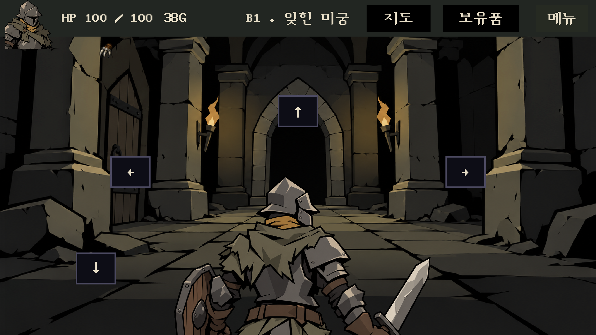
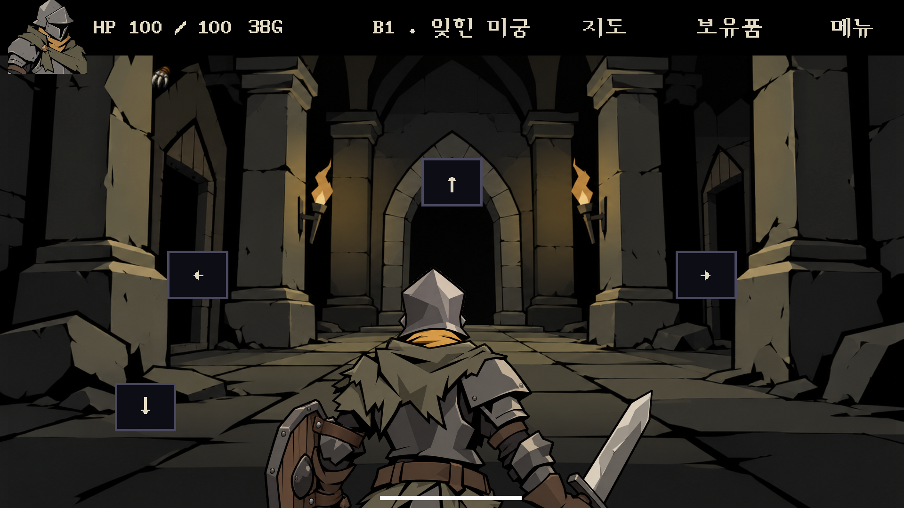
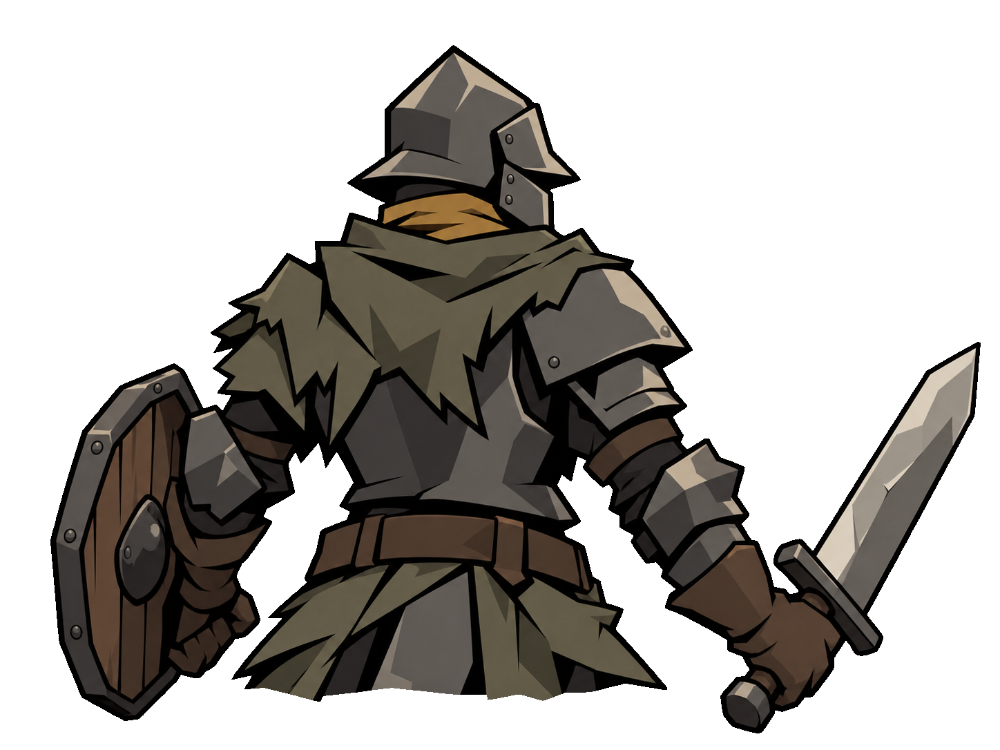
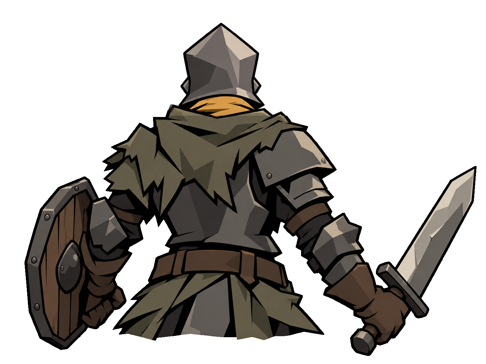
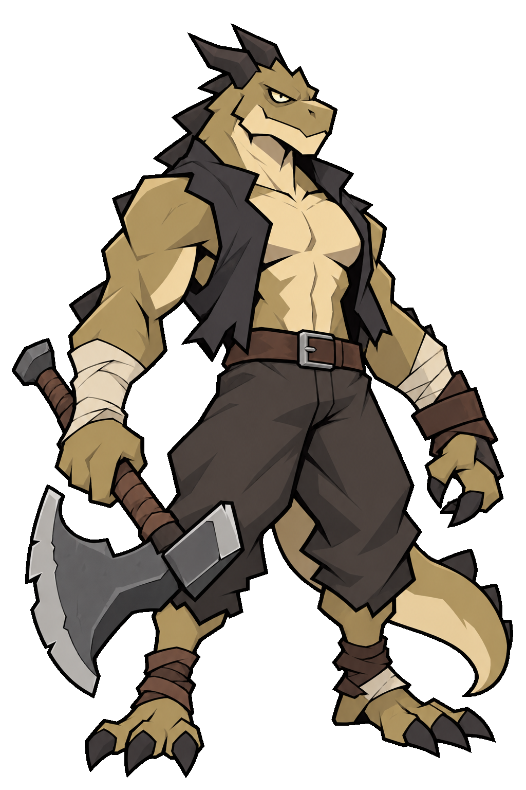
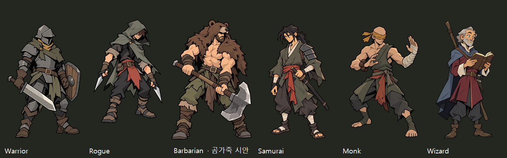

원본 구도 복원 · 워리어 · 곰가죽 바바리안 시안
4번 화면의 원본 배경을 다시 사용했습니다. 문 패널만 편집했고, 캐릭터 확대값은 당시 설정으로 복원했습니다. 배경은 확대 없이 조금 아래로 내렸습니다.
최신 수정: 포트레이트에 맞춘 투구 뒷면 · 격노하는 곰가죽 바바리안
게임 화면 비교

기준 · 사용자가 다시 지정한 4번 화면
적용 · 정면을 보는 워리어, 원래 배경과 확대, 아래로 내린 배경워리어 머리 방향 수정

수정 전
수정 후 · 머리 밖 몸통/장비 픽셀 유지곰가죽 바바리안 · 별도 비교 시안
기존 리자드는 보존했습니다. 아래 인간 바바리안은 곰 머리 가죽과 넓은 어깨, 양손 도끼를 사용합니다.

기존 리자드 곰가죽 인간 시안 · 게임 캐릭터 데이터는 기존 유지
곰가죽 인간 시안 · 게임 캐릭터 데이터는 기존 유지
원래 배경에서 문의 유무만 전환
연결이 없으면 문이 없는 벽입니다. 중앙 문은 원래 그림이며, 옆문은 기존 벽의 좁은 투시에 맞춘 편집입니다. 닫힌 왼쪽 문은 후속 잠금 표현용 자산으로 보존했습니다.
작업·실행 검증 · 내장 image_gen 프롬프트 · 몬스터 포함 전체 아트 보드